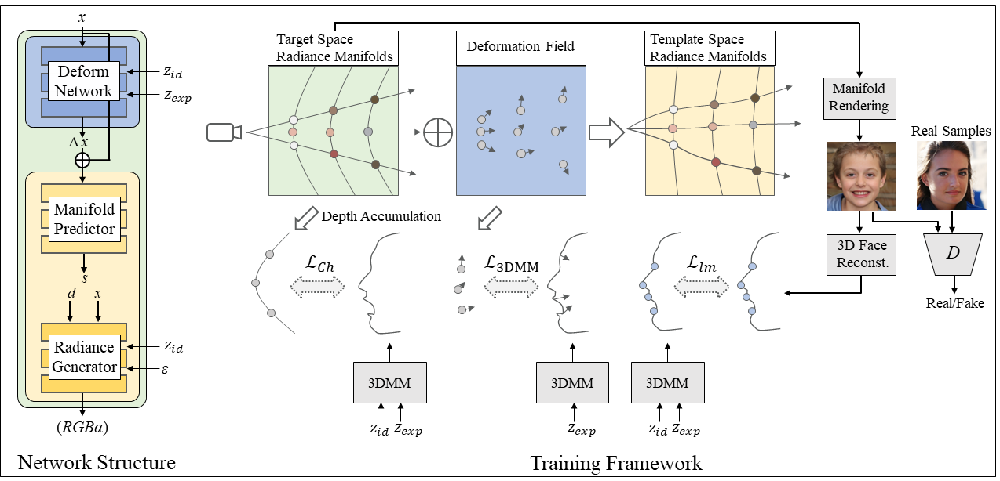

AniFaceGAN: Animatable 3D-Aware Face Image Generation
for Video Avatars
NeurIPS 2022 (Spotlight)

Abstract
Although 2D generative models have made great progress in face image generation and animation, they often suffer from undesirable artifacts such as 3D inconsistency when rendering images from different camera viewpoints. This prevents them from synthesizing video animations indistinguishable from real ones. Recently, 3D-aware GANs extend 2D GANs for explicit disentanglement of camera pose by leveraging 3D scene representations. These methods can well preserve the 3D consistency of the generated images across different views, yet they cannot achieve fine-grained control over other attributes, among which facial expression control is arguably the most useful and desirable for face animation. In this paper, we propose an animatable 3D-aware GAN for multiview consistent face animation generation. The key idea is to decompose the 3D representation of the 3D-aware GAN into a template field and a deformation field, where the former represents different identities with a canonical expression, and the latter characterizes expression variations of each identity. To achieve meaningful control over facial expressions via deformation, we propose a 3D-level imitative learning scheme between the generator and a parametric 3D face model during adversarial training of the 3D-aware GAN. This helps our method achieve high-quality animatable face image generation with strong visual 3D consistency, even though trained with only unstructured 2D images. Extensive experiments demonstrate our superior performance over prior works.
Method overview

Our proposed framework which consists of a template radiance field and an expression-driven deformation field for animatable 3D-aware face image generation.
Virtual talking faces driven by real videos
Comparison with DiscoFaceGAN
Comparison with 2D GAN (StyleGAN) inversion and editing
Real image embedding and editing
Ethics and responsible AI considerations
This work aims to design an animatable 3D-aware face image generation method for the application of photorealistic virtual avatars. It is not intended to create content that is used to mislead or deceive. However, like other related face image generation techniques, it could still potentially be misused for impersonating humans. We condemn any behavior to create misleading or harmful contents of real person, and are interested in applying this technology for advancing 3D- and video-based forgery detection. Currently, the images generated by this method contain visual artifacts that can be easily identified. The method is data driven, and the performance is affected by the biases in the training data. One should be careful about the data collection process and ensure unbiased distrubitions of race, gender, age, among others.
Citation
@inproceedings{yue2022anifacegan,
title={AniFaceGAN: Animatable 3D-Aware Face Image Generation for Video Avatars},
author={Wu, Yue and Deng, Yu and Yang, Jiaolong and Wei, Fangyun and Chen Qifeng and Tong, Xin},
booktitle={Advances in Neural Information Processing Systems},
year={2022}
}